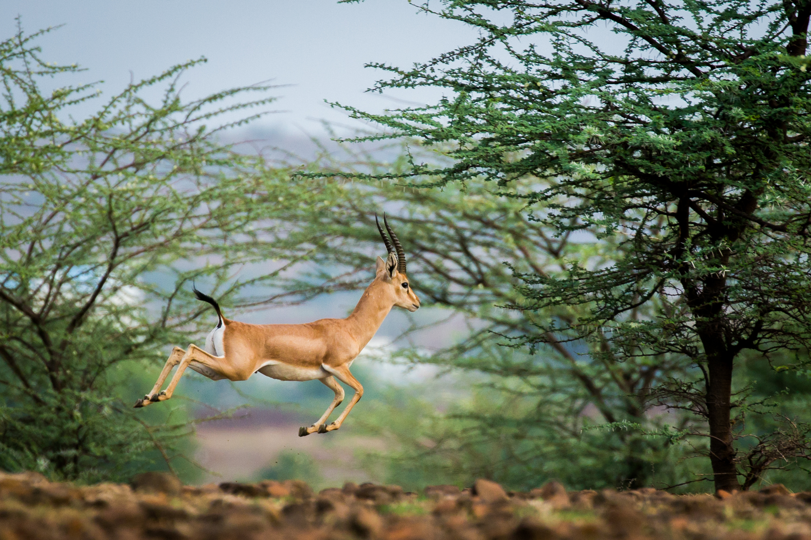
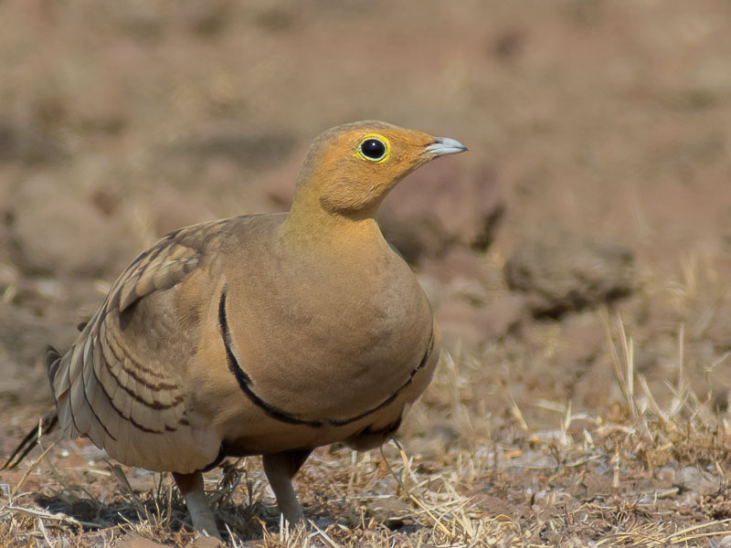
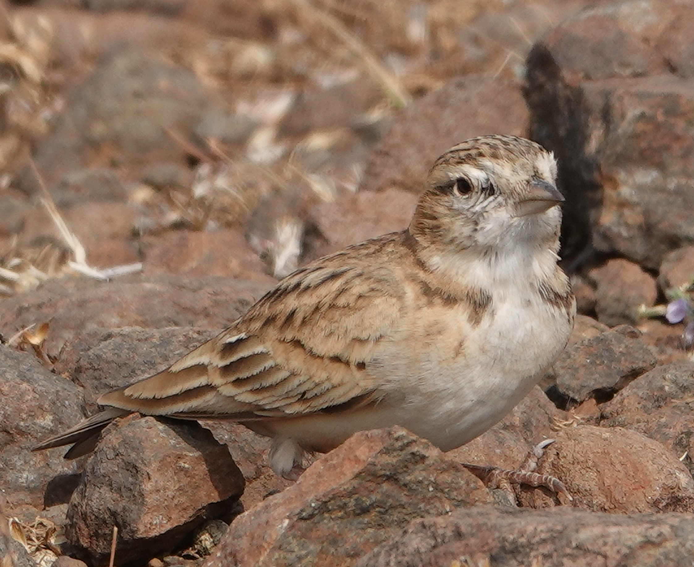
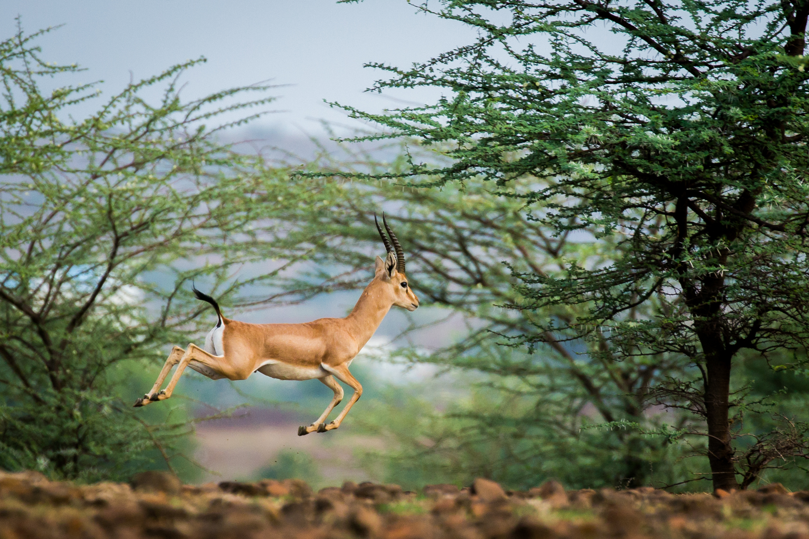
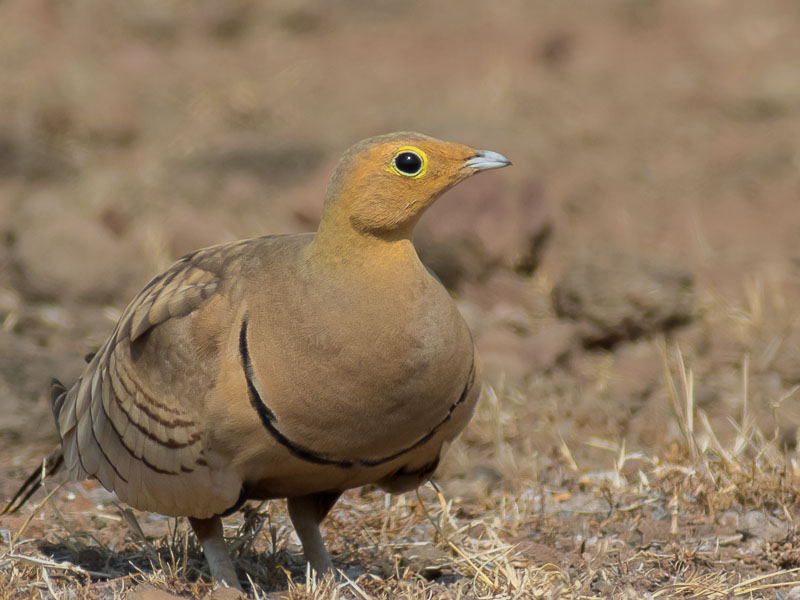
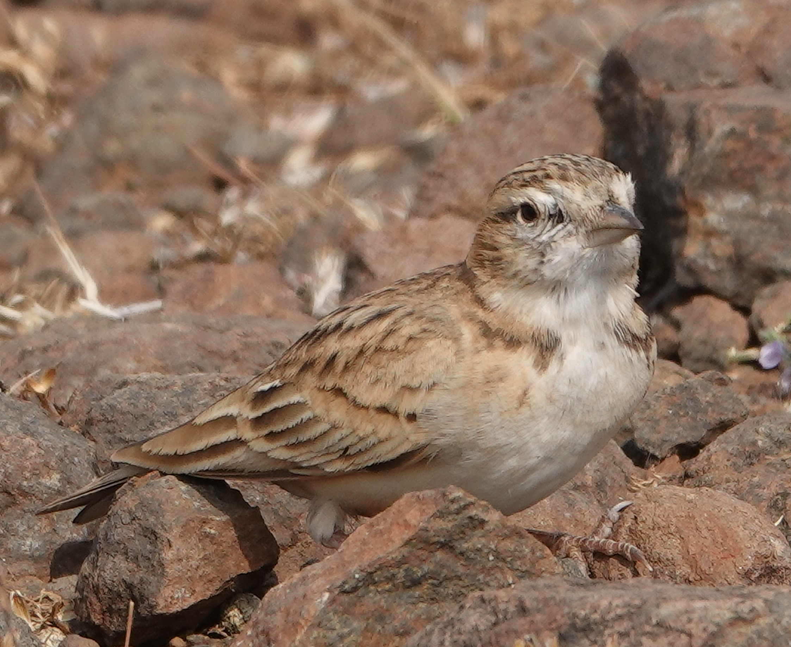

General Information
Mayureshwar Wildlife Sanctuary is not only popular for its birds and wildlife population, but also for its natural environment.One can see the Indian gazelle (chinkara),as well as birds, Striped Hyena, Indian Gray Wolf (Canis Lupus) and Indian Fox (Vulpes Bengalesis). Tourists are allowed to drive their vehicles inside the sanctuary as well as to walk.
The forest department has two tents within the sanctuary area.Accommodation options available in the vicinity are in Supe, outside the sanctuary. One may also stay in the Hadapsar area in Pune and drive to the sanctuary in the morning or evening.
The best time to visit is from late August to February when the weather is not very harsh. Summers are hot and humid and there is heavy rainfall during monsoon. The sanctuary is one of the smallest wildlife sanctuaries, with an area of 5.14 km2 and grasslands and desert areas.
Flora and Fauna
Mayureshwar Sanctuary is mostly made of dry deciduous scrub forest of Acacia catechu (Khair), Acacia sp. (Hivar), Dalbergia latifolia (Sisoo), Ziziphus mauritiana (Ber), Carissa opaca (Karwand), Alysicarpus bupleurifolius, Cyathocline purpurea, Eriocauion diane, Merremia emarginata, Cucumis melo, Cyperus kyllingia, Striga densiflora, Mareilea minuta trees and interspersed grasslands. Furthermore, the flora of Bramati constitutes a total of 994 taxa belonging to 938 species with 42 varieties and 14 sub-species, 577 genera and 136 families of flowering plants recorded and described.
It is also home to a variety of birds including: Indian roller, black-winged kite, Eurasian collared dove, ashy-crowned sparrow lark, blue-cheeked bee-eater, Gray Francolin, Yellow-wattled Lapwing, Common Hawk-Cuckoo, Short-Toed Snake Eagle, Bonelli's Eagle, Rufous-fronted Prinia, Indian Bush-Lark, Bay-backed Shrike, Southern Gray Shrike.
Migratory species like European Roller and Montagu's harrier can be seen in Winter season.
The main animal species found in the refuge are the Indian Gazelle (Chinkara), Striped Hyena, Indian gray wolf, Indian Jackal, Indian fox and Indian Hare (black-naped hare).
History
The area was declared as a sanctuary from 1919 as per the Wildlife Institute of India.
 




